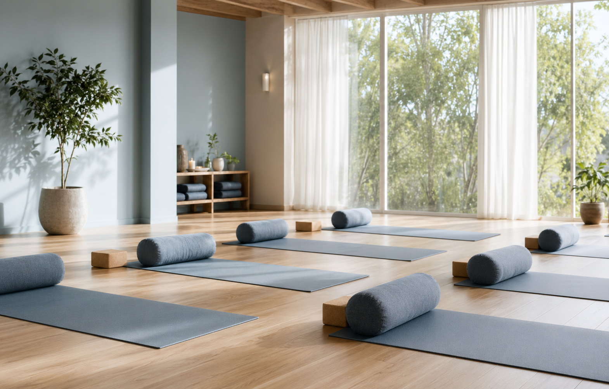
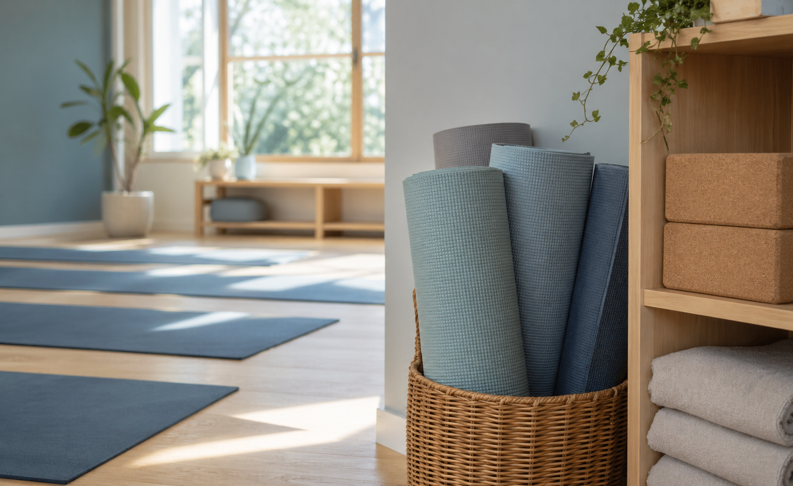
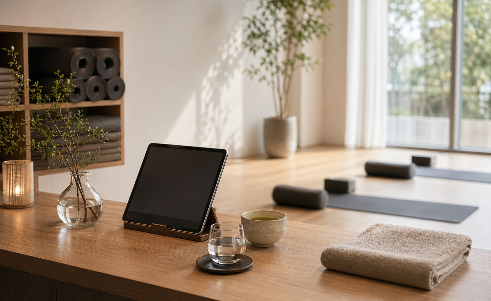

はじめてのハタヨガ
呼吸、姿勢、基本ポーズをゆっくり確認。身体が硬い方や運動が久しぶりの方にも安心です。
- 強度: やさしい
- 対象: 初心者・シニア
Small group yoga studio in Nakameguro
中目黒駅から徒歩4分。SORA Yoga Studioは、はじめての方も無理なく通える少人数制のヨガスタジオです。朝のリセット、仕事帰りのリラックス、産前産後のケアまで、今の身体に合う時間をご用意しています。
一人ひとりを見られる少人数制
朝も夜も通いやすい中目黒エリア
初心者から経験者まで選べるクラス

Our philosophy
SORAでは、ポーズの完成度よりも「今日の自分に気づくこと」を大切にしています。肩こり、冷え、眠りの浅さ、産後の不調など、日々の小さな違和感を整えるためのクラスを、経験豊富なインストラクターが丁寧に案内します。
Classes
強度、目的、時間帯がひと目で分かるように整理しています。はじめての方には、呼吸と基本ポーズから始めるクラスがおすすめです。
呼吸、姿勢、基本ポーズをゆっくり確認。身体が硬い方や運動が久しぶりの方にも安心です。
背骨を目覚めさせ、呼吸を深める朝クラス。出勤前にも参加しやすい短時間レッスンです。
呼吸と動きをつなげ、全身をしなやかに使います。集中して汗をかきたい日に。
ブロックやボルスターに身体を預け、深い休息へ。眠りの質を整えたい方に人気です。
骨盤周りと股関節を整え、冷えやむくみをケア。産後の方は医師の許可後にご参加ください。
静かな呼吸法と短い瞑想で、忙しい頭を休める夜クラス。仕事帰りにもおすすめです。
Weekly schedule
Instructors
レッスン前には体調や不安を伺い、ポーズの軽減法も丁寧にお伝えします。初心者の方も、周りと比べず自分のペースで参加できます。
RYT500。呼吸法とリストラティブを中心に、日常へ戻る力を育てるクラスを担当。

Instructor骨盤ケア、産前産後クラス担当。体調に合わせた軽減法をわかりやすく案内します。
Price

BookingTrial flow
希望クラスを選び、フォームからお申し込みください。前日18時まで受付しています。
開始15分前を目安にお越しください。着替えスペースをご利用いただけます。
ヨガ経験、体調、気になる不調を確認し、無理のない動き方をお伝えします。
呼吸から始め、身体の状態に合わせて進めます。水分補給も自由です。
Voice
「運動が苦手で不安でしたが、少人数なので質問しやすく、肩の力を抜いて参加できました。」
30代 会社員「夜のクラスに通い始めて、眠りが深くなりました。駅から近いので仕事帰りに寄りやすいです。」
40代 デザイナー「産後の身体に合わせて動きを変えてくれるので安心。家でもできる呼吸法を教えてもらえます。」
30代 主婦FAQ
はい。柔軟性は必要ありません。ポーズは完成形を目指すものではなく、今の身体に合う範囲で行います。
動きやすい服装、お水、汗拭きタオルをご用意ください。ヨガマットは無料でレンタルできます。
通常クラスは男女ともに参加できます。女性専用クラスはスケジュールに表示しています。
レッスン開始3時間前までオンラインで変更・キャンセルできます。体調不良の場合は無理せずご連絡ください。
Access
東急東横線・東京メトロ日比谷線「中目黒駅」正面改札から徒歩4分。目黒川沿いの落ち着いた通りにある、自然光の入る小さなスタジオです。
Begin with one breath
体験レッスンはオンラインで24時間受付中です。クラス選びに迷う方は、予約フォームの備考欄にご相談内容をご記入ください。